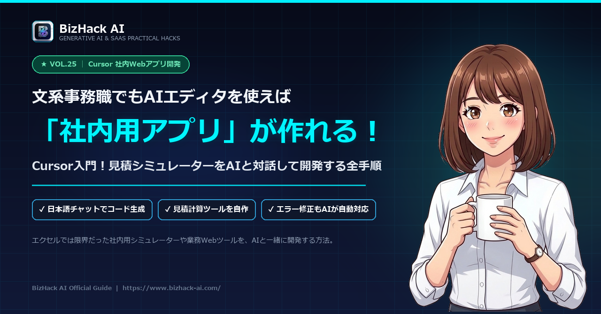

【CursorでWebアプリ自作】文系事務職が社内用見積シミュレーターをAIと開発する手順

-
Cursorの導入と初期セッティング
VS Codeベースで誰でも使いやすい環境を5分でインストール。 -
「指示出し（プロンプト）」の黄金テンプレート
「こんな見た目で、この計算をして」と日本語でアプリを作らせるプロンプト構成。 -
社内配布とPDFダウンロード機能
計算結果をそのままワンクリックでPDF出力する営業向け便利機能の実装。
HTML、CSS、JavaScriptを単一のファイル（index.html）にまとめた「社内用・見積シミュレーターWebアプリ」を作成してください。 # 要件とデザイン - モダンで清潔感のあるビジネス向けUI（Tailwind CSSのCDNを利用） - レスポンシブ対応（スマートフォンでも快適に入力・計算できる） # 機能要件 1. 基本プラン選択（ラジオボタンまたはドロップダウン）： - スタンダードプラン：100,000円 - プレミアムプラン：200,000円 - エンタープライズプラン：400,000円 2. オプション項目の選択（チェックボックス）： - 初期導入サポート：+50,000円 - データ移行代行：+80,000円 - 24時間365日保守：+30,000円/月 3. 利用期間（月数）の入力スライダー（1ヶ月〜24ヶ月） 4. リアルタイム計算表示： - 小計、消費税（10%）、総額を即時更新して大きく表示 5. 「見積書PDF印刷」ボタン： - ブラウザの印刷ダイアログ（window.print）を呼び出し、A4一枚で見積書として綺麗にプリントアウトできるようにする
💡 使い方：Cursorエディタを開き、[Ctrl + L] でチャット欄に貼り付けて [Enter] を押してください。
1. Excelの限界と「専用Webツール」の圧倒的なメリット
現場の見積計算において、多くの会社がExcelに依存しています。しかし、Excelには以下の構造的弱点があります。
数式の誤削除・誤操作
誰かが関数セルを上書きしてしまい、間違った金額でお客様に提示してしまう事故。
スマホ・タブレットでの絶望的な使いにくさ
出先で営業担当がスマートフォンから入力しようとしても、画面が小さく入力が困難。
これに対し、ブラウザで動く**「専用Webアプリ」**なら、数式は裏側で固定され誤操作がゼロに。スマホでもボタンをポチポチ押すだけで瞬時に金額が算出されます。
2. なぜAI特化エディタ「Cursor」なら非エンジニアでも作れるのか？
『Cursor』は、世界標準のエディタ「VS Code」をフォークし、Claude 3.5 SonnetやGPT-4oをネイティブ統合した開発環境です。
- 「Ctrl + K」でファイル内に直接コードを生成
白紙のファイルに向かって「見積もり計算ができるHTMLを作って」と日本語で打つだけで、数秒でコードが書かれます。 - 「Ctrl + L」でチャットしながらデザインや機能を追加
「ボタンを青色にして」「消費税10%の計算を加えて」と修正点を指示するだけで、AIが自動で差分を反映してくれます。 - エラーが起きても「Fix」ボタン一発で自己修復
動かない原因をAI自身が解析し、ワンクリックで修正案を適用してくれます。
3. 【実践】見積シミュレーターを1時間で開発する4ステップ
開発環境のセットアップから動作確認までの流れです。
ステップ①：Cursorのダウンロードとインストール
Cursor公式サイト（cursor.com）からインストーラーをダウンロードしてインストールします。日本語化パック（Japanese Language Pack）を入れておくと操作も安心です。
ステップ②：作業用フォルダを作成して開く
デスクトップ等に「`mitsumori-app`」という空のフォルダを作り、Cursorの「フォルダを開く」で読み込みます。
ステップ③：`index.html` を作成してプロンプトを入力
新規ファイル `index.html` を作成し、ショートカット `Ctrl + K`（Macは `Cmd + K`）を押して、後述の指示プロンプトを送信します。
ステップ④：ブラウザでダブルクリックして動作確認
生成された `index.html` を保存し、エクスプローラーからChrome等のブラウザにドラッグ＆ドロップするだけで、その場で動く見積アプリが起動します。
4. AIにアプリを作らせる「指示出しプロンプト」実例
以下のプロンプトをCursorの生成ウィンドウに入力してください。
HTML、CSS、JavaScriptを単一のファイル（index.html）にまとめた「社内用・見積シミュレーターWebアプリ」を作成してください。
# 要件とデザイン
- モダンで清潔感のあるビジネス向けUI（Tailwind CSSのCDNを利用）
- レスポンシブ対応（スマートフォンでも快適に入力・計算できる）
# 機能要件
1. 基本プラン選択（ラジオボタンまたはドロップダウン）：
- スタンダードプラン：100,000円
- プレミアムプラン：200,000円
- エンタープライズプラン：400,000円
2. オプション項目の選択（チェックボックス）：
- 初期導入サポート：+50,000円
- データ移行代行：+80,000円
- 24時間365日保守：+30,000円/月
3. 利用期間（月数）の入力スライダー（1ヶ月〜24ヶ月）
4. リアルタイム計算表示：
- 小計、消費税（10%）、総額を即時更新して大きく表示
5. 「見積書PDF印刷」ボタン：
- ブラウザの印刷ダイアログ（window.print）を呼び出し、A4一枚で見積書として綺麗にプリントアウトできるようにする5. 完成したWebアプリを社内で安全に動かす方法
外部サーバーを契約しなくても、安全に社内共有する方法がいくつかあります。
① 社内共有フォルダ（ファイルサーバー）
作成した `index.html` を社内ファイルサーバーに置くだけ。全員がダブルクリックすればブラウザで動きます。外部への通信がないため機密情報も安全です。
② 社内Notionやポータルへの埋め込み
HTMLファイルを社内イントラ等にアップロードしてリンクを設置。営業メンバーがブックマークしておけば、商談の場で即座に見積もりを提示できます。
6. まとめ＆次の自作ツールへの展望
「システム開発はエンジニアに依頼するもの」「予算が何百万円もかかるもの」という常識は、Cursorの登場で完全に過去のものとなりました。
Cursorで日本語指示
コードが読めなくても「どんな画面を作りたいか」を伝えるだけ。
1ファイル完結
HTML/CSS/JSがまとまっているため、管理も共有も極めて簡単。
現場の課題を即解決
「壊れない・使いやすい」Webツールを自分の手で量産できる。
見積計算だけでなく、社内アンケート集計ツール、業務チェックリスト、在庫確認画面など、現場の「あったらいいな」をぜひCursorで形にしてみてください！